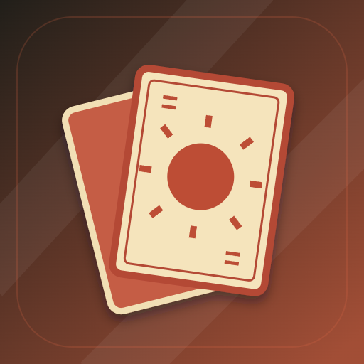

<- all projects

Pacto de Mesa
PC
Volume
Live
Win the trick. Rewrite the next one.
Winning a trick is only part of the plan. In a travelling card club, decide when to spend a strong card and when your influence is worth spending to change the next public rule. The original 36-card deck has four suits numbered 1 to 9, the public rule names the dominant suit and how tricks are won, and small losing cards earn influence to bid in the council between tricks. A story journey covers twelve club tables and six rulebooks against eight rival regulars, alongside a daily cup, custom tables and solo play against computer rivals or local matches for two or four players.